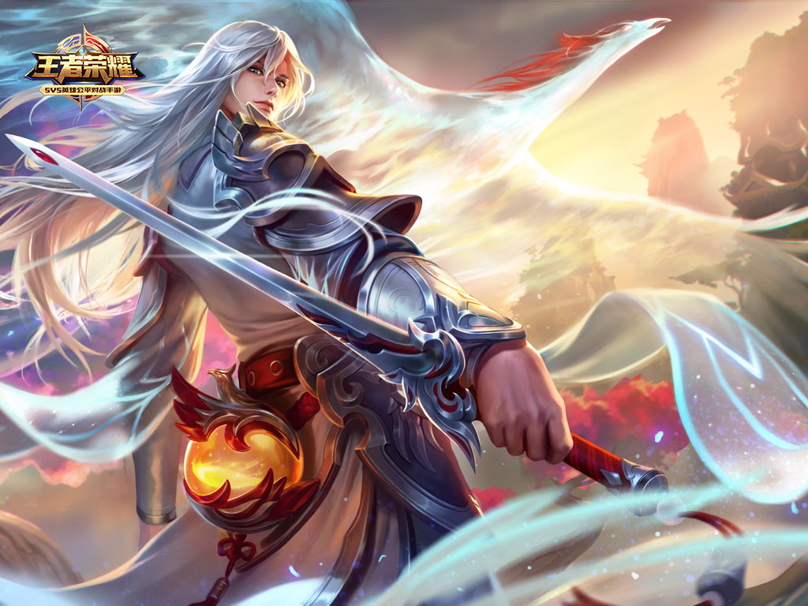

巍峨的长安城，数百年间屹立不倒。但长安的门户，守卫严密的朱雀门却镌刻着一道剑痕，那是一个青年醉后以长剑所书的诗句“欲上青天揽明月”，轰动整个京城。当治安官狄仁杰欲以破坏长安的罪名逮捕他时，爱才的女帝拒绝了。女帝甚至下令保留朱雀门上饱含剑意的诗痕。

数日之间，这名一人一剑，直入长安的青年“剑仙”之名传遍大唐。
他，就是李白。
彼时的李白，年少轻狂，拒绝了女帝入朝为官的邀请后，开始试剑天下的旅途。当他初次见到滔滔黄河时，心中的剑意迸发而出，奔流到海不复回。
从那时起，没有机关的师承，没有魔道的秘法，没有魔种的血脉的李白，仅仅依靠自己和手中的剑，成为大唐强者中的第一人，乃真正的天纵之才。

他会给每个败于己的对手赋诗，因此，诗名和剑名也一同流传开来。后来，甚至有人视之为荣耀，为得诗篇而求一敗，令人哭笑不得。 就在李白的剑意到达巅峰之后不久，旅途也来到了西域。很少有人知道，身为唐人的李白，出生西域的海市蜃楼之下。他怀着剑仙荣耀归来，却发现幼年记忆里充满异域风情的繁华城池已经不复存在。被贩为奴隶的楼兰公主，向他倾诉自己的遭遇：唐军的铁骑越过长城，踏平了整个西域。荒废的城池很快被黄沙淹没。李白想要救出她，少女却选择了从屈辱中自我了断。
鲜血激起了李白的侠义之心。他第二次闯入长安，质问女帝要讨回征平西域的说法。一夜长安风云变色，大明宫也在剑仙之剑下黯淡无光。有史以来从未曾被外力攻破的长安城，第一次因为一个普通人而动摇。
没有人知道最后发生了什么事。李白自长安城中全身而退。他和女帝的密谈视为禁忌，不见于史官的笔下。
只有李白自己清楚，他的骄傲被挫败了，在最强的巅峰。从那以后，他开始自我放逐，从寂寞的旅途中寻求新的意义，陪伴他的，出了剑，还多了酒。
人人都以为剑仙就此一蹶不振。但长安的府衙中，狄仁杰查看着关于李白的行踪报告，露出了难以琢磨的冷笑。“再次出鞘的时候，会更加惊天动地吧。这家伙，太过骄傲，又太过寂寞了。”
而狄仁杰所预言的这一天，在数百年之后到来。
这是长安城平常的一天。晨钟回响在上空，自西域的旅人远途而来，正抬头打量朱雀门上的剑痕；热闹的长乐坊中，五陵少年们因前所未有的美妙琴声而骚动；感业寺的银杏树依旧枝繁叶茂。唯有狄仁杰手下的密探隐入黑暗，紧张注视着那个白衣潇洒，酒剑相伴的男子身影。
剑仙李白，三入长安了。
这次长安城又将怎样被动摇呢？
“大河之剑天上来！”
返回顶部 返回首页